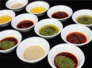
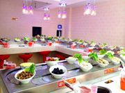
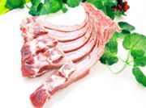
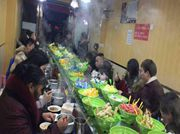
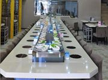

冬天一到，吃火锅成为人们不错的美味，可对于那些血脂高的人来说，为了控制血脂，那香喷喷的涮肉是不敢吃了。那什么食物涮着吃既能解馋，又能降血脂呢？ 豆制品，尤其是冻豆腐...
查看详情2018-03-30

火锅虽是人们常吃的食物，但是还是要避免几个误区，吃货们在吃回转火锅时要注意几个事项。 1、多吃些蔬菜。吃火锅时不仅要有肉、鱼等食物，还应该多吃些蔬菜，蔬菜中含有大量...
查看详情2018-03-30
秋雨绵绵，气温下降，此时不注意保暖很容易感冒咳嗽，因此小编给大家介绍了一些治疗感冒咳嗽的食疗法，希望对大家有帮助。 治疗感冒咳嗽的食疗 1、萝卜葱白汤 做法：在锅里放入...
查看详情2018-03-30
天气一天天变得越来越冷，火锅店的生意一天天变得越来越红火，甚至店门口排起长龙。现在吃火锅不仅是一种饮食选择，也称得上一种时尚生活，但小编提醒各位，火锅应当食之有度...
查看详情2018-03-30

第一道：吃火锅时要点一盘红薯：我们都知道肉类食品是酸性食物，而红薯则是碱性食物，两者进入胃中就可以酸碱中和，尽量使我们的体内保持酸碱平衡。 第二道：锅中可多放些蔬菜...
查看详情2018-03-30

1、吃火锅时应尽量避免喝冷饮忽冷忽热，对胃黏膜极为不利，极易造成胃肠疾病。 2、不能把吃剩的菜和汤放在火锅中过夜。 3、不能过辣，有些人吃火锅时辣椒蒜葱等调料放得太多，...
查看详情2018-03-30

随着回转小火锅设备在市场中的需求量不断的增加，越来越多的人开始使用回转小火锅设备自己进行创业了，那么在安装回转小火锅设备的时候需要注意什么呢？ 合理选择主机和电机的...
查看详情2018-03-30

一、方便快捷： 旋转小火锅，全部由机器作，避免消费者在用餐高峰时段的等菜现象。 二、健康卫生： 回转火锅设备一人一小锅，想吃什么就煮什么，更干净，更卫生。 三、时尚舒适...
查看详情2018-03-30